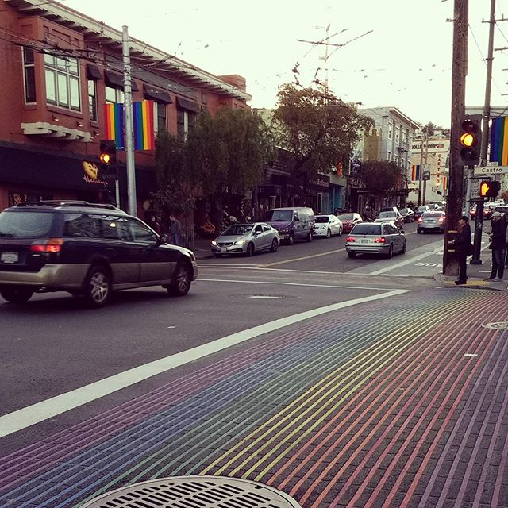

February is LGBT history month. It's an annual month long event to observe an remember the history of the LGBT (Lesbian, Gay, Bisexual and Transgender) civial rights movement. It's a time to remember those who have fought against homophobia and have allowed people to live and love freely, including myself.
Until recently, I never made an effort to learn about LGBT history. However, over the past year, a few experiences have made me appreciate the struggle of the LGBT community in the past and present. It began at the candlelight vigil on the final night of Manchester Pride. I was humbled by the sea of flickering candles in Sackville Gardens that represent those lost to the HIV virus and those still fighting the stigma associated. It is especially fitting that the annual event is overlooked by the bronze memorial statue of Alan Turing. From that moment I knew it is important for me to recognise LGBT history and learn more about it.
Since then, my partner and I have attended a Digital Pride event, learnt about the life of Alan Turing through a play at the Royal Exchange Theatre and were moved by a performance of Le Gateau Chocolat at the Queer Contact Festival. Most recently, we went to a see Moonlight, the story defining three chapters in the life of young black man growing up America. The film was beautifully made, I can see exactly why it was so successful at the Oscars. The film conveyed the kindness, love and support of a community towards his journey and yet recognising all the struggles he still had to face.
My LGBT history experience was rounded up on a recent trip to the GLBT in the El Castro district of San Fransisco. It gave me an opportunity to learn about those people ... for me, it's because love is the most powerful thing around. the world would be a better place, if to just love those around us was more accepted.
The Amateur Swimming Asscociation (or ASA) has worked hard to ensure the aquatics community offers safe and supportive spaces for the LGBT community to get involved in sport at all levels. The ASA has been a Stonewall Diversity Champion for the past three years and is the only English national governing body recognised by the scheme. Stonewall aims to ensure that the LGBT community are accepted without exception in the work place. As part of the LGBT history month, the ASA has been running a series of profiles of the aquatics community. I was proud to be asked to be part of the ASA LGBT History Month project. My profile can be found at